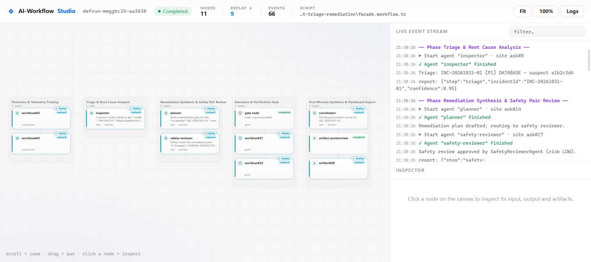

AI-Workflow
A deterministic dynamic-workflow engine — the plan lives in compiled code, not in one agent's context window.
The four agentic failure modes — structurally fixed
One run, end to end
$ node bin/workflow.js run-script apps/incident-triage-remediation/facade.workflow.ts \ --cwd apps/incident-triage-remediation --args '{"scenario":"p1_db_pool_exhaustion"}' --- Phase 1: Detection & Telemetry Probing --- ✔ step-1-probe (Deterministic Telemetry & Git Probing) --- Phase 2: Triage & Root Cause Analysis --- agent: inspector ask → inspector (ask#2) ✔ ask done (ask#2) --- Phase 3: Remediation Synthesis & Safety Pair Review --- ... ✔ run dwfrun-… completed in 0.60s asks: 4 (replayed from journal: 0) result: {"tripped":true,"severity":"P1","gates":"passed", ...}
# Re-run after editing one step — completed nodes replay for free: $ node bin/workflow.js run-script … --resume dwfrun-… ⚡ replayed from journal: ask#2#1 (0 provider calls) ⚡ replayed from journal: escalate#4#1 (0 provider calls) ✔ asks: 0 (replayed from journal: 2)
The same run, rendered by the journal — Studio cards, replay badges and the live event stream are generated evidence, not hand-made dashboards:

And the DAG canvas of the second application — worker + paired reviewer fanned out per file (light affectUI theme, regenerated from the current engine):

How a script becomes an orchestrated run
What's inside
Strict TypeScript against one ambient .d.ts in a fully virtual CompilerHost. Authorization rules at AST level: purity bans (Date.now/Math.random), literal-only world.run commands, closed world (no imports), shadowing detection. ask<T> synthesizes a JSON schema — JSDoc becomes the field docs the worker reads.
Child process + node:vm realm over NDJSON. Intrinsics banned twice: compile-time diagnostics and realm-time throws. Process supervision: POSIX process groups, Windows whole-tree kill, sanitized child environments.
SQLite WAL. Every node keyed (siteId, ordinal, inputHash) — a hit short-circuits with zero provider calls; a mismatch fails loudly instead of misbinding. Resume, amend-with-warm-cache and escalation answers all reuse the same mechanism.
escalate() parks a run with a dwfq- question; answer it and the run resumes for free. hole<T>() lets a workflow grow its own topology as findings land. Amend forks lineage with an imported warm cache.
Providers: deterministic mock (offline demo), Bedrock, or external agent CLIs — AI_WORKFLOW_PROVIDER=codex|gemini|opencode — spawned supervised, AIMD-governed per provider, with per-actor routing and provider health.
MCP tools for any host (Claude Code / ZCode / opencode / Codex CLI), an agent skill that authors scripts for you, view (journal-rendered HTML report), serve (live, self-refreshing), ASCII/HTML DAGs.
Reproducible evidence
$ npm test # 851 tests · 848 pass · 3 skipped · 0 fail $ npm run test:pbt # 18 tests · 18 pass · 0 fail $ tests/e2e/runner.ts # 118/118 passed · 100% $ governance test # 43 tests · 43 pass · 0 fail $ bash scripts/demo.sh # exit 0 · offline · ~42s (all nine acts OK)
Test fingerprints from the v2.9.0 release on the merged main line (fresh npm ci + build). Every number reproducible with the commands shown.
Try it
# the 60-second tour npm install && npm run build && bash scripts/demo.sh # attach live to any run node bin/workflow.js serve <runId> # → http://127.0.0.1:4649/